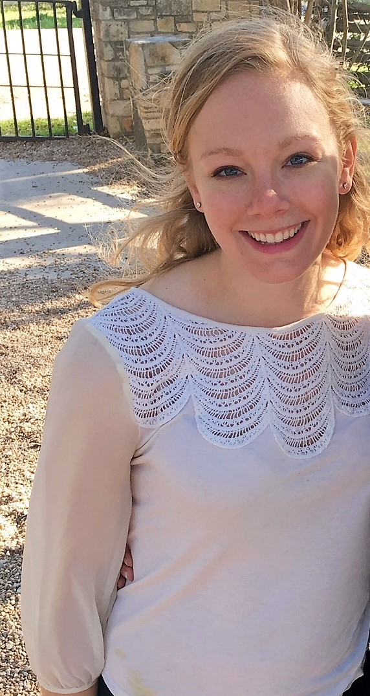

About Me
Hi there! My name is Marissa Pels, and I'm so glad you decided to stop by my site. I am originally from Coppell, TX (near Dallas), but I moved to Austin to attend college at UT, and I've been here ever since! I studied chemical engineering in school, and when I graduated, I started working as an engineer for a pharmaceutical manufacturing company. After a few years there, I knew it was time for a career change.
With a background in engineering, I love learning, creating, building, exploring, and fixing. I need to be challenged. I started teaching myself web development, and I LOVED it. I heard about the UT Coding Bootcamp and thought it would be a great way to become more competitive and marketable in this field. I am now taking the class and working as a technical support analyst for a small tech company. I can't wait to see what the future holds!
On the weekends, you'll probably find me hanging out around Zilker and playing with strangers' puppies, running around town lake, or trying out a new restaurant to find the best breakfast taco.
Connect with Me